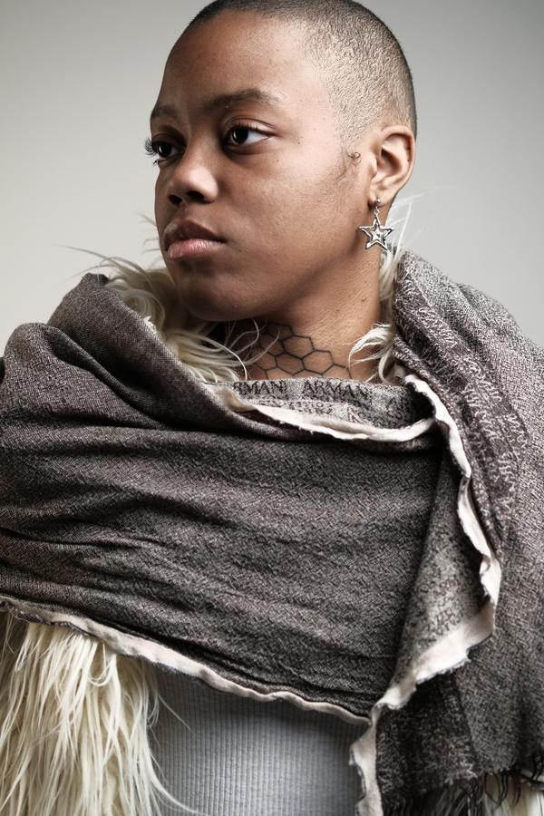

Click below to download my resume (PDF).
Download Resume
Jewel Lee-Johnson is a 3D artist and creative technologist working across digital animation, 3D production, and interactive media. She holds a BFA in Film/Animation/Video from the Rhode Island School of Design, where her studies focused on digital animation, 3D modeling, and experimental media.
Her technical practice spans Blender, Unreal Engine, Unity, and the Adobe Creative Suite, with experience in 3D modeling, texturing, rendering, procedural animation, compositing, and video editing. In addition to visual production, she has experience supporting technical workflows for animation and XR projects. Her work includes motion capture calibration and data processing using Perception Neuron and Axis Studio, as well as collaboration with Brown University's XR Hub, where she supported asset management, color space configuration, and interactive workflows in Unity and Marvelous Designer. She is currently engaged in freelance production and is a member of Vox Populi Collective in Philadelphia, contributing to exhibition support and production maintenance. Her interests include 3D production, technical art, animation, XR, and the development of interactive and experimental media. She is available for freelance commissions, contract work, and collaborative projects.